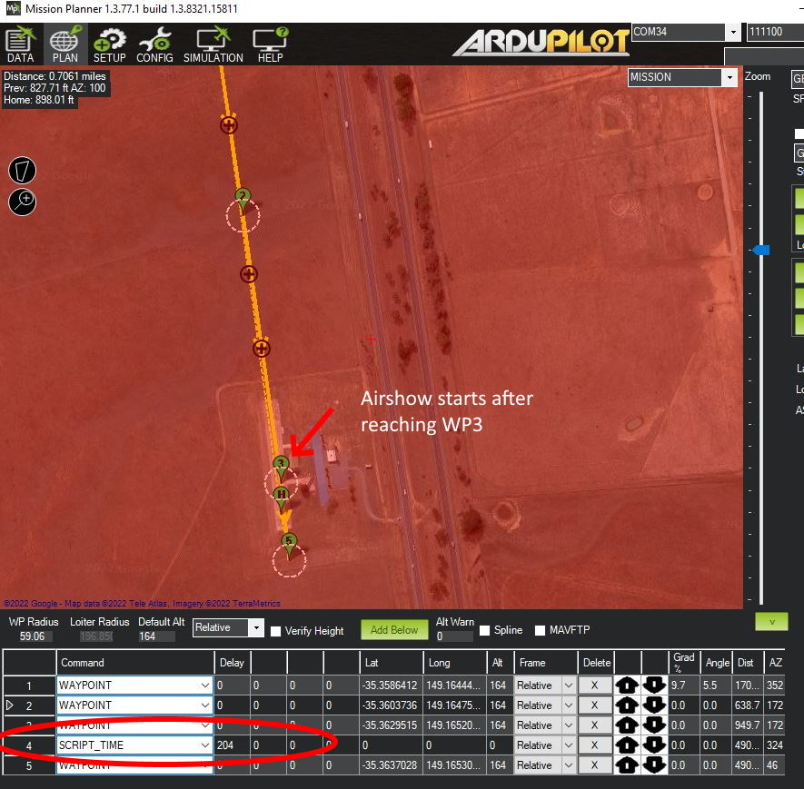
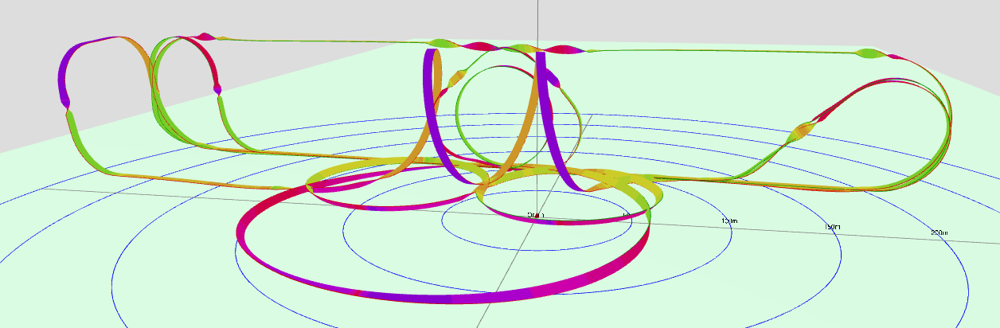

[copywiki destination=”plane”]
Scripted Aerobatics¶
Note
this capability is in ArduPlane 4.2 and higher
ArduPilot has the capability of executing aerobatics from a LUA script. Either via AUTO mode mission items, or via scripts executed in many normal plane flight modes, usually controlled via a transmitter switch and selection RC channels.
Note
this requires a vehicle capable of aerobatic flight, properly tuned pitch,roll, and yaw rate controllers, and the pilot should be capable of safely taking over control (by switch or mode change) the vehicle while in an unusual attitude, if the need arises. The ACRO_x_RATE parameters limit the maximum commanded rate for each axis, as in ACRO mode.
Trajectory Precise Plane Aerobatics LUA script (firmware 4.4 and higher)¶
A trajectory precise (attempts to track an exact earth referenced geospatial path), plane aerobatics script example is provided in the LUA Scripting Applet directory called plane_aerobatics.lua . This LUA applet has a multitude of maneuvers, as well as complete sequences of routines, and the ability to easily create and add new sequence of routines.
These tricks and sequences can be either run as part of a mission using the NAV_SCRIPT_TIME mission command above, or activated by a switch on the RC transmitter.
The script provides numerous individual tricks, and a table of their IDs is provided in the README.md file. Below is a list, but future expansion is anticipated so check the README:
ID |
Name |
Arg1 |
Arg2 |
Arg3 |
Arg4 |
Turnaround |
|---|---|---|---|---|---|---|
1 |
Figure Eight |
radius |
bank angle |
No |
||
2 |
Loop |
radius |
bank angle |
# loops |
No |
|
3 |
Horizontal Rectangle |
length |
width |
radius |
bank angle |
No |
4 |
Climbing Circle |
radius |
height |
bank angle |
No |
|
5 |
vertical Box |
length |
height |
radius |
No |
|
6 |
Immelmann (FastRoll) |
radius |
Yes |
|||
7 |
Straight Roll |
length |
num rolls |
No |
||
8 |
Rolling Circle |
radius |
num rolls |
No |
||
9 |
Half Cuban Eight |
radius |
Yes |
|||
10 |
Half Reverse Cuban Eight |
radius |
Yes |
|||
11 |
Cuban Eight |
radius |
No |
|||
12 |
Humpty Bump |
radius |
height |
Yes |
||
13 |
Straight Flight |
length |
bank angle |
No |
||
14 |
Scale Figure Eight |
radius |
bank angle |
No |
||
15 |
Immelmann Turn |
radius |
Yes |
|||
16 |
Split-S |
radius |
Yes |
|||
17 |
Upline-45 |
radius |
height gain |
No |
||
18 |
Downline-45 |
radius |
height loss |
No |
||
19 |
Stall Turn |
radius |
height |
direction |
Yes |
|
20 |
Procedure Turn |
radius |
bank angle |
step-out |
Yes |
|
21 |
Derry Turn |
radius |
bank angle |
No |
||
23 |
Half Climbing Circle |
radius |
height |
bank angle |
Yes |
|
25 |
Laydown Humpty |
radius |
height |
Yes |
||
26 |
Barrell Roll |
radius |
length |
# spirals |
No |
|
27 |
Straight Hold |
length |
bank angle |
No |
||
28 |
Partial Circle |
radius |
bank angle |
No |
||
30 |
Eight Point Roll |
length |
No |
|||
31 |
Multi Point Roll |
length |
num points |
No |
||
32 |
Side Step |
radius |
bank angle |
No |
To use as part of a mission, you would insert a SCRIPT_TIME mission item as shown:
in the above example, once WP3 is reached the airshow (shown here as “204”, loaded from a shedules file named trick204.txt, see scheduels section below) will execute, and when finished, proceed to WP5.
Tricks on a Switch¶
This applet also provides a means to execute tricks or sequences via an RC Switch in normal modes like ACRO, LOITER, CRUISE, or FBWA.
Setup¶
Make sure you have Autotuned your plane and that its capable of doing aerobatics in ACRO mode well (Bixlers and flying wings only can do rolls and loops, generally, since they have insufficient yaw authority and side fuselage area…ie must be able to knife edge for full capability). This includes Autotuning the new YAW rate controller. Enable YAW_RATE_ENABLE and set ACRO_YAW_RATE appropriately (90deg/s is a good start). When you Autotune, not only do pitch and roll, but also yaw by exercising the rudder, like pitch and roll.
Enable scripting, on an autopilot that is capable (F7 or H7) with SCR_ENABLE =1, reboot and set SCR_HEAP_SIZE = 250000 (you will need more if other scripts are running also) and SCR_VM_I_COUNT = 200000.
Copy the plane_aerobatic.lua script into your SD card APM/scripts directory. Use the RAW view and copy to files on the SD card. Reboot.
If you want to activate tricks and schedules from an RC switch, assign an RC channel to
RCx_OPTION= 300 for the trick activation switch (low=disable,mid=show trick number selected, high= do it) and one for 301 which is trick selection. This normally a pot or slider, but can be any switch (which limits the number of tricks to the number of switch positions). Set theTRIK_ENABLEto 1 and reboot. Then set TRIK_COUNT` parameter to the number of tricks (11 maximum) to be selectable by the trick selection channel. Reboot.For each trick/schedule, set its corresponding
TRIKn_ID/ARG1/ARG2/ARG3/ARG4parameters. For example, if you wish TRIK3 to be a Vertical Box, 50 meters tall, 100 meters long, with corner radii of 15 meters, setTRIK3_ID= 5,TRIK3_ARG1= 100,TRIK3_ARG2= 50, andTRIK3_ARG3= 15. Other TRIK3 argument values are ignored.Setting the activation switch to mid position will identify the trick number selected by the selection channel on the ground station or TX, if running Yaapu telemetry.
You can abort out of the trick by putting activation switch low, change modes, or set selector to 0. A trick or sequence will also abort if the programmed trajectory is not being met with an error limit. This usually indicates a lack of sufficient vehicle tuning or power.
Remember: ALTITUDE IS YOUR FRIEND! dont attempt your first one below 200feet! and FPV is a good way to try it out first, if you have trouble with seeing the vehicle at that altitude.
AEROM Parameters¶
Many new parameters will appear when this script is loaded, which control the tuning of the tricks. See the README.md file for up to date information, but a few should be changed from their defaults in most cases:
AEROM_PATH_SCALEthis is probably the most critical when using the example schedules. Individual tricks in a mission, or a trick on a switch, can adjust the trick dimensions with the TRIKx_ARGy parameters. But the schedules, unless edited, have dimensions suited to high performance pattern planes with significant vertical speed capability. For normal 3D planes or sport planes these are too aggressive and the sequence will probably abort on many tricks, especially in wind. However, if you lower the path scale from “1” (no scaling) to “.75”, more normal 3D planes will be able to execute the schedule. For marginally powered (can barely hover vertically) planes, even a “.5” scale factor, or less, might be required, scaling all radii and lengths of the pattern by 50%.AEROM_THR_MINshould be set to 15-20 (%) to maintain inertia at the bottom of loops, etc.AEROM_KE_ANGmost planes need a little boost to the knife edge rudder, so setting this 10 is usually neededTRIM_ARSPD_CM: while the script does NOT use the airspeed sensor, it uses GPS velocity to track the trajectory and this parameter to set target ground speeds. As such you may wish to set this (even if there is no airspeed sensor) to a “fast” cruise speed within the vehicles capability. Flying on the fast end of cruise helps deal with wind impacts.
Schedules¶
The applet also allows loading sequences of tricks to perform contest schedules like F3A or airshows as a single trick which can be executed from a mission or as Trick on a Switch. These are text files of the form trickX.txt, where X would be the trick id, and located in the /scripts directory, or the root directory on the SD card where the plane_aerobatics.lua script is stored. These should not be the same number as existing tricks.
An example for a schedule is included as trick72.txt and would be executed as TRIKx_ID = 72 via switch or in an AUTO mission command. The schedule will display its “name” when started, and as each trick begins a “message” will sent to the GCS to indicate its start.
Several sequences, such as F3A, etc. are included in the Schedules folder. The above ‘trick72.txt’ is the SuperAirshow Sequence, consisting of Loop/HalfReverseCubanEight/ScaleFigureEight/Immelmann/Roll/Split-S/RollingCircle/HumptyBump/Barrel Rool/Cross Box TopHat/Triangular Loop:
Adding new basic tricks can also be done via a schedule file. This is shown in the SuperAirShow schedule file where a triangle loop and a crossbox tophat trick have been created and loaded with the schedule sequence.
Trick File Commands¶
Several commands can be used within the trick file:
name: <the name of the Trick>
message: <usually the trick name> displayed as a GCS message. This should be positioned immediately before the trick
<trick name> <param1><parm2>..<param4> the subroutine name in the plane_aerobatics file that actually performs the trick and its passed parameters
align_center: this will wait to start the following trick until the vehicle is centered, or if beyond the center (in the direction of flight) of the aerobatic box, immediately. The center is where the trick schedule was started.
align_box x: this positions the start of the next trick “x” from the box end in the direction of travel, ie “1” would make the trick be aligned at the box end, while .75 would start it 3/4 the way from center to it. Usually a value of “1” is used.
Tuning for Aerobatics¶
Normal ArduPilot Autotune provides a safe, stable PID tune for most vehicles. As such, its not optimized for precision aerobatics which require a tight tune. See below:
Simulation¶
Using SITL, especially in conjunction with RealFlight and a RealFlight model like the AddictionX, makes development and debugging much easier without risking a real vehicle. However, simulation can also be done without RealFlight using Mission Planner alone with ArduPilot’s provided 3D plane model.
Below is a video showing simulation using Mission Planner and the built-in 3D plane simulation:
If you are using RealFlight for simulations, here is how to setup the Addiction 3D model to do scripted trajectory aerobatics:
Script Calls into the firmware¶
Other scripts can be developed which allow control of the vehicle, either via NAV_SCRIPT_TIME mission items or from normal flight modes. The key calls are:
Enabling scripting control override of roll/pitch/yaw rates and throttle with a specific call “vehicle:nav_scripting_enable(..)” which returns a boolean indicating success or failure.
Obtaining the arguments of a NAV_SCRIPT_TIME command using “vehicle:nav_script_time()” if running while in AUTO mode.
Controlling the above rates and throttle with the “vehicle:set_target_throttle_rate_rpy(….)” function, which must be called regularly (at least every second) to set the roll/pitch/yaw rates and throttle percentage. Failure to do so, will disable the control override and return control to the original flight mode. Changing flight modes also disables script control.